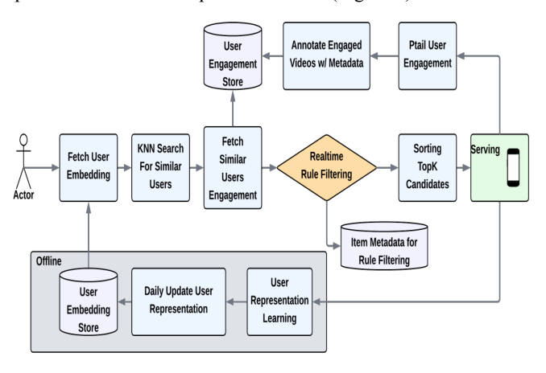
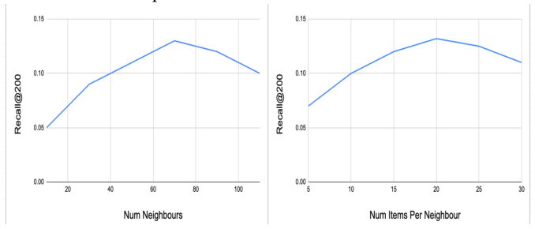

SocRipple: A Two-Stage Framework for Cold-Start Video Recommendations (社交涟漪：面向冷启视频推荐的两阶段框架)
- 会议/期刊: RecSys 2025 (Industry Track, 4 pages)
- 作者与机构: Amit Jaspal, Kapil Dalwani, Ajantha Ramineni (Meta Platforms, Inc.)
- 推荐链路定位: 召回 (Candidate Retrieval / 候选生成)
- 研究方向: 冷启动与长尾推荐 / 社交与群组推荐
- 论文原文: https://arxiv.org/abs/2508.07241v1
- 开源代码: 暂未开源
TL;DR (1分钟核心速览)
针对工业级视频平台新视频零交互、CF 模型无法个性化分发、纯内容方案又缺乏用户相关性的痛点，本文提出 SocRipple 两阶段召回框架：Stage 1 用创作者社交关注图做高精度种子曝光并实时回收早期正反馈，Stage 2 以稳定的双塔用户嵌入 + FAISS KNN 检索"涟漪式"扩散到兴趣近邻。在 6/12/24 小时冷启分桶上 Recall@200 达 12.8%/13.1%/13.2%（对比最强基线 DropoutNet 的 5.8%/7.2%/8.8%，相对提升约 +120%/+82%/+50%），线上两周 A/B 冷启内容曝光份额 +36%，主互动指标 +0.22% 且冷启内容互动率持平。
Background & Motivation (背景与核心矛盾)
- 主流范式: 工业推荐依赖 Embedding+MLP 双塔召回，靠海量交互日志学习物品表征；冷启动侧的代表作是 DropoutNet（训练时随机丢弃 CF 特征以模拟冷启）、CLCRec（内容对比学习表征）以及 Item-KNN / Content-KNN 等近邻召回。
- 前人局限: 其一，CF 类方法对零交互新物品完全失效，且帕累托效应使头部物品垄断曝光、加剧流行度偏置；其二，内容类方法只依赖静态元数据，无法刻画用户特定相关性，也不随实时行为与社交影响自适应。
- 前人局限（结构性）: 已有的"早期种子"思路（把新内容推给创作者粉丝）只做了高精度 bootstrap，缺乏系统化的大规模扩散与评估；图方法（GNN / 好友正则）虽能传播信号，却未把"社交种子"与"嵌入近邻扩散"串成一条级联链路。
- 核心洞察 (Key Insight): 创作者的直接社交连接天然是新内容的最高精度初始受众；而一旦拿到这批早期正反馈，就可以借由历史交互学到的稳定用户嵌入把信号沿兴趣空间向外扩散——精度与召回被拆到两个阶段分别解决。
- 本文切入点: 用"社交种子 → 嵌入 KNN 涟漪"的级联两阶段设计，在探索（新内容发现）与利用（个性化相关性）之间取得平衡。
Method (核心方法设计)
1. 整体框架 (Overall Architecture)
给定创作者 \(c\)上传的新视频\(v_{new}\)，Stage 1 立即从社交关注图\(G\)中取出粉丝集合\(F_c=\{u\mid(u,c)\in G\}\)，在推荐流中定向 boost 并实时记录正反馈用户集\(U_{engaged}\subseteq F_c\)；Stage 2 在用户\(u_j\)请求 feed 时触发：从内存索引取出其离线预计算的稳定嵌入\(e(u_j)\)，做 KNN 得到邻居集\(N(u_j)\)，对每个邻居查询其近 24 小时正反馈的冷启视频缓冲，取并集构成候选，再按"邻居支持数、邻居相似度、新鲜度"加权打分、过滤已曝光项后送入下游排序。用户嵌入由双塔模型在历史交互上训练、每日离线批量刷新并写入 FAISS ANN 索引，从而把"新内容"的传播成本从物品侧转移到用户侧。
flowchart TD
A["新视频 v_new + 创作者 c"] --> B["Stage 1: 社交图取粉丝 F_c 定向 boost"]
B --> C["实时回收早期正反馈 U_engaged"]
C --> D["Stage 2: 用户请求时取 e(u_j) 做 KNN"]
D --> E["查邻居 24h 冷启互动缓冲, 并集候选"]
E --> F["支持数/相似度/新鲜度加权 + 去重过滤"]
F --> G["Top 冷启视频并入排序候选"]
2. 关键设计拆解 (Key Designs)
-
Stage 1 社交种子 (Social Boost)：冷启最冷阶段没有任何物品侧信号，任何基于物品嵌入的召回都退化为随机。本文直接把分发对象换成"人"——以关注边 \((u,c)\in G\)定义种子集\(F_c\)，用社交邻近性换取最高精度的初始曝光，同时把曝光转化为可实时消费的反馈流\(U_{engaged}\)。其有效性直觉在于：粉丝对创作者存在已声明的偏好先验，正反馈率远高于全库随机曝光，因此这批信号噪声低、可用于后续扩散的"锚点"质量高。
-
Stage 2 嵌入近邻涟漪 (Neighbor Expansion)：纯社交图传播（SGE）只能覆盖已声明关系，召回天花板低。本文改为在行为兴趣空间扩散：对邻居 \(u_k\in N(u_j)\)收集其近 24h 正反馈冷启视频集\(V_{new}(u_k)\)，候选并集后按加权分排序 $\(s(v)=\alpha\cdot\frac{|\{u_k\in N(u_j): v\in V_{new}(u_k)\}|}{|N(u_j)|}+\beta\cdot \mathrm{sim}(u_j,u_k)+\gamma\cdot \mathrm{fresh}(v)\)$ 其中 \(\mathrm{fresh}(v)\)为距创建时间的衰减项，\(\alpha,\beta,\gamma\) 由线上 A/B 调优。关键直觉是：嵌入相似度捕捉的是共享行为偏好这一与社交边正交的信号，因此能在社交图之外打开大量高相关的新受众。
-
训练目标、负采样与推理效率：双塔以点积 \(s(u,i)=e_u^{\top}e_i\) 建模亲和度，采用 in-batch 负采样的 sampled softmax： $\(P(y_{u,i}=1\mid u,i)=\frac{\exp(s(u,i))}{\exp(s(u,i))+\sum_{i'\in \mathcal{B}^{-}}\exp(s(u,i'))},\quad \mathcal{L}=-\sum_{(u,i)\in\mathcal{B}}\log P(y_{u,i}=1\mid u,i)\)$ 仅用正反馈（如点赞）训练，无需显式硬负采样挖掘。推理侧的关键工程取舍是：用户塔每日离线批量产出嵌入并建 FAISS ANN 索引，物品侧零训练成本；Stage 2 的在线开销仅为一次 KNN 查询 + 邻居互动缓冲的哈希查找 + 轻量加权排序，作者称经过系统优化后可满足高吞吐候选生成的严格延迟约束。
Experimental Setup & Evaluation Protocol (实验设置与评估协议)
- 数据集与预处理: 来自某大型视频平台的大规模工业交互日志（未公开具体规模），冷启定义按物品创建时间分桶为 \(\le 6\)h、\(\le 12\)h、\(\le 24\)h 三档；正反馈以点赞等显式互动为准。
| 数据集 | #Users | #Items | #Interactions | 稀疏度/密度 | 特征/场景说明 |
|---|---|---|---|---|---|
| 工业视频平台日志 | 未披露（十亿级） | 未披露 | 未披露 | 未披露 | 社交关注图 \(G\) + 视频互动日志，冷启按 6/12/24h 分桶 |
- 数据划分与防穿越 (Splitting Strategy): 原文未明确说明划分方式；从"按物品年龄分桶 + 近 24h 互动缓冲"的设计推断为时间切分语义（仅使用请求时刻之前的互动），但论文未给出形式化的防穿越描述，属评估披露不足。
- 排名评测协议 (Ranking Protocol): 采用
Recall@200作为召回阶段指标，未说明是 Full-Ranking 还是采样排序，亦未报告 NDCG/HR 等排序质量指标；线上部分以两周 A/B 测试的主互动指标、冷启曝光份额、冷启互动率为准，并声明统计显著。 - 对比基线与超参设置: 离线基线为 DropoutNet、Content-KNN、Item-KNN 三类；消融基线为 Stage 1 Only 与 Stage 1+SGE。嵌入维度 \(d\)与训练超参未披露；Stage 2 关键超参为邻居数\(K\)（扫描 10–70，峰值\(K=70\)）与每邻居冷启视频数\(M\)（取\(M=20\)）。
Key Experimental Results (实验关键数据)
1. 主实验对比 (Main Results)
| 方法 | Recall@200 (\(\le\)6h) | Recall@200 (\(\le\)12h) | Recall@200 (\(\le\)24h) |
|---|---|---|---|
| Item-KNN | 3.2% | 5.4% | 7.5% |
| Content-KNN | 4.5% | 5.2% | 4.8% |
| DropoutNet | 5.8% | 7.2% | 8.8% |
| SocRipple | 12.8% | 13.1% | 13.2% |
| Improv. vs 最强基线 | +120.7% | +81.9% | +50.0% |
线上 A/B（两周）：主互动指标 +0.22%；\(\le\)24h 冷启内容曝光份额 +36%；冷启内容互动率与对照组持平。
2. 消融实验 (Ablation Study)
| 邻居扩展策略 (\(\le\)24h) | Recall@200 | 相对 Stage 1 |
|---|---|---|
| Stage 1 Only（仅社交种子） | 4.8% | — |
| Stage 1 + SGE（社交图扩展） | 6.7% | +39.6% |
| Stage 1 + Stage 2（嵌入 KNN） | 13.2% | +175.0% |
3. 关键实验发现 (Key Findings)
- 越冷收益越大，且随物品变老而收敛：\(\le\)6h 桶相对提升 +120.7%，\(\le\)24h 桶降至 +50.0%，而 SocRipple 自身三桶几乎持平（12.8%→13.2%），说明其性能不依赖物品级交互累积，恰好补在 CF 最失效的区间；随年龄增长 CF 基线回升（Item-KNN 3.2%→7.5%）也印证了这一点。
- 扩散信号的正交性是可量化的：Stage 1 单独仅 4.8%，换成社交图扩展只到 6.7%（+1.9pt），而换成嵌入 KNN 直接到 13.2%（+8.4pt），后者增益是前者的约 4.4 倍——行为兴趣相似度携带了社交边之外的大量增量信息，这是全文最有说服力的一组数字。
- 扩散存在明确的精度-召回拐点：\(K\)从 10 增至 70 时 Recall 单调升至 0.13，超过 70 后因远邻噪声回落；\(M\) 增至 20 后收益饱和并转负。这说明涟漪半径必须受限，否则"邻居支持数"这一聚合信号会被稀释。

Highlights & Limitations (亮点、对比与审稿批判)
- 与代表作对比 (vs. Prior Work): 与 DropoutNet 的本质区别是后者在训练期模拟冷启、推理时仍依赖物品侧表征，而 SocRipple 彻底绕开物品嵌入，把冷启分发转化为"用户侧检索"问题；与 CLCRec 等内容对比方法相比，它引入实时反馈与社交结构，具备在线自适应能力；与早期种子/粉丝推送类工作相比，它补上了系统化的第二阶段扩散与大规模离线+线上双重评估。
- 可迁移亮点: ①"物品冷启 → 用户侧 KNN 检索"的问题重写，可迁移到任何已有稳定用户嵌入的推荐场景（如新商品、新广告主冷启）；②用"邻居支持数 / 邻居相似度 / 新鲜度"三元加权做候选聚合，是一个极轻量、易上线、易调参的扩散打分模板。
- 审稿级局限批判: ①评估披露严重不足——数据集规模、划分方式、Full-Ranking 与否、嵌入维度、显著性检验方法均未交代，Recall@200 单一指标也无法反映排序质量，4 页短文难以支撑可复现性；②方法强依赖社交关注图与"粉丝即高精度种子"的假设，在无社交图的平台（如纯电商）上 Stage 1 直接失效，且 Stage 2 的 24h 缓冲窗口与 \(K,M\) 阈值对内容更新速率高度敏感，跨场景迁移需重新调参；③线上仅报告 +0.22% 主指标提升，未给出置信区间与长期留存观测，冷启曝光 +36% 是否以牺牲成熟内容生态为代价亦未讨论。
Rating (四维评分)
- 方法创新性 (Novelty): ⭐⭐⭐ （两阶段级联思路朴素但工程直觉准确，"社交种子 + 嵌入涟漪"的组合此前未被系统化串联，属组合式创新而非机制突破）
- 评估协议与实验扎实度 (Protocol & Experiments): ⭐⭐⭐ （有离线分桶 + 消融 + 两周线上 A/B 三层验证，但数据集与划分协议披露缺失、指标单一、无显著性检验细节）
- 写作与数学规范度 (Clarity & Rigor): ⭐⭐⭐⭐ （4 页短文结构紧凑、公式仅保留必要的双塔与 sampled softmax，符号干净；但超参与系统细节留白较多）
- 工业落地与复现价值 (Industrial & Practical Value): ⭐⭐⭐⭐ （物品侧零训练成本、用户嵌入日更 + FAISS 索引、在线仅一次 KNN 与轻量聚合，落地路径清晰；但无开源代码且强绑定社交图，复现门槛高）